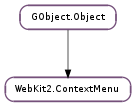

| static | new() |
| static | new_with_items(items) |
| append(item) | |
| first() | |
| get_item_at_position(position) | |
| get_items() | |
| get_n_items() | |
| insert(item, position) | |
| last() | |
| move_item(item, position) | |
| prepend(item) | |
| remove(item) | |
| remove_all() |
None
None
| Name | Type | Access |
|---|---|---|
| parent | GObject.Object | r |
Bases: GObject.Object
| Returns: | The newly created WebKit2.ContextMenu object |
|---|---|
| Return type: | WebKit2.ContextMenu |
Creates a new WebKit2.ContextMenu object to be used as a submenu of an existing WebKit2.ContextMenu. The context menu of a WebKit2.WebView is created by the view and passed as an argument of WebKit2.WebView ::context-menu signal. To add items to the menu use WebKit2.ContextMenu.prepend (), WebKit2.ContextMenu.append () or WebKit2.ContextMenu.insert (). See also WebKit2.ContextMenu.new_with_items () to create a WebKit2.ContextMenu with a list of initial items.
| Parameters: | items ([WebKit2.ContextMenuItem]) – a GLib.List of WebKit2.ContextMenuItem |
|---|---|
| Returns: | The newly created WebKit2.ContextMenu object |
| Return type: | WebKit2.ContextMenu |
Creates a new WebKit2.ContextMenu object to be used as a submenu of an existing WebKit2.ContextMenu with the given initial items. See also WebKit2.ContextMenu.new ()
| Parameters: | item (WebKit2.ContextMenuItem) – the WebKit2.ContextMenuItem to add |
|---|
Adds item at the end of the menu.
| Returns: | the first WebKit2.ContextMenuItem of menu, or None if the WebKit2.ContextMenu is empty. |
|---|---|
| Return type: | WebKit2.ContextMenuItem |
Gets the first item in the menu.
| Parameters: | position (int) – the position of the item, counting from 0 |
|---|---|
| Returns: | the WebKit2.ContextMenuItem at position position in menu, or None if the position is off the end of the menu. |
| Return type: | WebKit2.ContextMenuItem |
Gets the item at the given position in the menu.
| Returns: | a GLib.List of WebKit2.ContextMenuItem s |
|---|---|
| Return type: | [WebKit2.ContextMenuItem] |
Returns the item list of menu.
| Returns: | the number of WebKit2.ContextMenuItem s in menu |
|---|---|
| Return type: | int |
Gets the length of the menu.
| Parameters: |
|
|---|
Inserts item into the menu at the given position. If position is negative, or is larger than the number of items in the WebKit2.ContextMenu, the item is added on to the end of the menu. The first position is 0.
| Returns: | the last WebKit2.ContextMenuItem of menu, or None if the WebKit2.ContextMenu is empty. |
|---|---|
| Return type: | WebKit2.ContextMenuItem |
Gets the last item in the menu.
| Parameters: |
|
|---|
Moves item to the given position in the menu. If position is negative, or is larger than the number of items in the WebKit2.ContextMenu, the item is added on to the end of the menu. The first position is 0.
| Parameters: | item (WebKit2.ContextMenuItem) – the WebKit2.ContextMenuItem to add |
|---|
Adds item at the beginning of the menu.
| Parameters: | item (WebKit2.ContextMenuItem) – the WebKit2.ContextMenuItem to remove |
|---|
Removes item from the menu. See also WebKit2.ContextMenu.remove_all () to remove all items.
Removes all items of the menu.